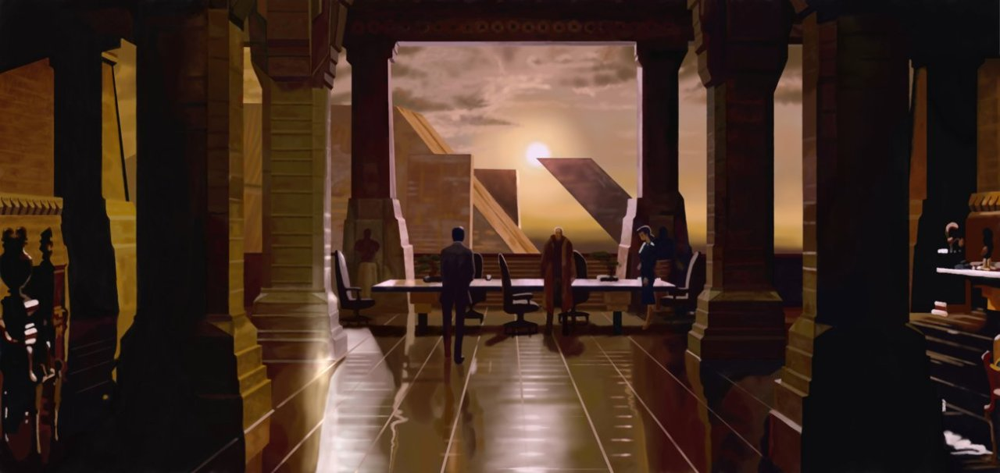

yellow ~ the naive dreamer
yellow in films can represent naive idealism and a false sense of hope for the world. it is usually surrounding a character who believes they are in a better world than they really are, and is unprepared for what is coming to them. they are good natured, dreamy, and too trusting, turning a blind eye to what is happening around them. these characters are missing key information that will impact their story, which leads to their downfall. they are one of the most realistic depictions of humanity in film.
if you are :
individualistic
wistful
romantic
you are a red character!